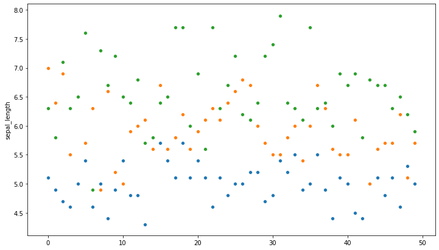
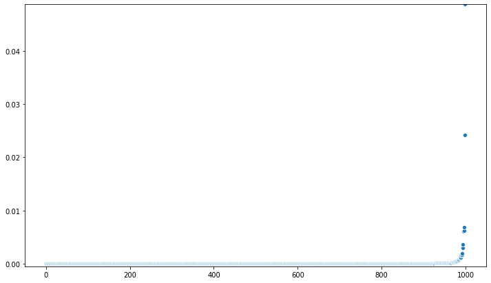
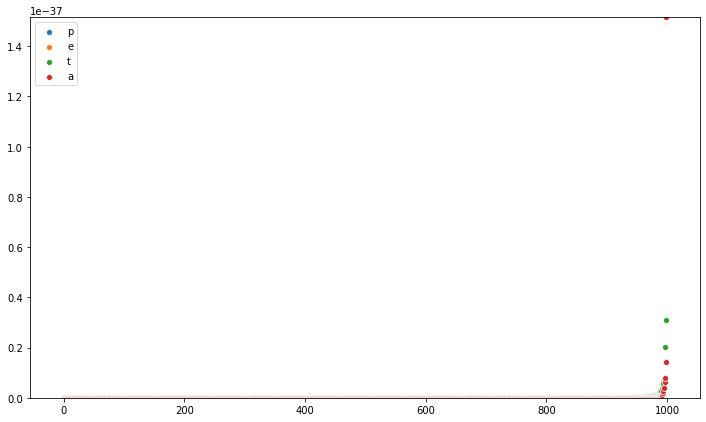

Create a bootstrapped t_test function and show it off using the iris data set¶
[1]:
import numpy as np
import pandas as pd
import matplotlib.pyplot as plt
import seaborn as sns
import statsmodels.stats.weightstats as smsw
from scipy import stats
from statsmodels.stats.multitest import multipletests
Load in the iris data set and plot it a bit¶
[2]:
ir_df = sns.load_dataset("iris")
#ir_df.head(), ir_df.info()
ir_df["species"] = ir_df["species"].astype('category')
ir_df["species"].unique()
[2]:
[setosa, versicolor, virginica]
Categories (3, object): [setosa, versicolor, virginica]
[3]:
_ = plt.figure(figsize=(12,7))
group_1 = ir_df[ir_df["species"]=="setosa"].sepal_length
group_2 = ir_df[ir_df["species"]=="versicolor"].sepal_length
group_3 = ir_df[ir_df["species"]=="virginica"].sepal_length
_ = sns.scatterplot(range(0,len(group_1)), group_1)
_ = sns.scatterplot(range(0,len(group_2)), group_2)
_ = sns.scatterplot(range(0,len(group_3)), group_3)

Define a function which generates many bootstrapped p-values from an independent t-test¶
[4]:
## define a function which generates many bootstrapped p-values from an independent t-test
def boot_independent_t_test(data: pd.DataFrame, feature: str, grouping_var: str,
grouping_grp1: str, grouping_grp2: str, size = 10) :
# select the 'feature' and 'grouping_var' columns and remove row if any nan present
data = data.copy()
data = data[[feature, grouping_var]]
_ = data.dropna(axis = 0, how = 'any', inplace = True)
# New dataframes
group1 = data.loc[data[grouping_var] == grouping_grp1]
_ = group1.reset_index(inplace = True)
group2 = data.loc[data[grouping_var] == grouping_grp2]
_ = group2.reset_index(inplace = True)
# Check assumption: homogeneity of variances
(levene, p_value) = stats.levene(group1[feature], group2[feature])
# Initialize empty numpy array for the bootstrapping
bs_replicates = np.empty(size)
if p_value < 0.05 :
# YES: Run t-test using statsmodels - unequal variance
group_variance = "Unequal"
for i in range(size):
bs_sample_gr_1 = np.random.choice(group1[feature], len(group1[feature]), replace=True)
bs_sample_gr_2 = np.random.choice(group2[feature], len(group2[feature]), replace=True)
bs_replicates[i] = smsw.ttest_ind(bs_sample_gr_1,
bs_sample_gr_2,
usevar = 'unequal')[1]
else :
# NO: Run t-test using statsmodels - equal variances
group_variance = "Equal"
for i in range(size):
bs_sample_gr_1 = np.random.choice(group1[feature], len(group1[feature]), replace=True)
bs_sample_gr_2 = np.random.choice(group2[feature], len(group2[feature]), replace=True)
bs_replicates[i] = smsw.ttest_ind(bs_sample_gr_1,
bs_sample_gr_2,
usevar = 'pooled')[1]
return bs_replicates
Plot all the p_values from a single feature¶
[19]:
_ = plt.figure(figsize=(12,7))
bs_replicates_sp_l = boot_independent_t_test(data=ir_df, feature="sepal_length", grouping_var="species",
grouping_grp1="versicolor", grouping_grp2="virginica", size = 1000)
_ = sns.scatterplot(range(0,len(bs_replicates_sp_l)), np.sort(bs_replicates_sp_l))
_ = plt.ylim(min(bs_replicates_sp_l)-0.0005, max(bs_replicates_sp_l))

Plot all the p_values from a list of features¶
[22]:
size = 1000
_ = plt.figure(figsize=(12,7))
feat_list = ir_df.drop("species", axis=1).columns.values
for i in range(0,len(feat_list)):
leg_name = feat_list[i]
print(leg_name)
bs_replicates = boot_independent_t_test(data=ir_df, feature=feat_list[i], grouping_var="species",
grouping_grp1="setosa", grouping_grp2="versicolor", size = size)
_ = sns.scatterplot(range(0,len(bs_replicates)), np.sort(bs_replicates))
_ = plt.ylim(min(bs_replicates), max(bs_replicates))
_ = plt.legend(leg_name, loc='upper left')
sepal_length
sepal_width
petal_length
petal_width

Using the p-values from the bootstrapped t_test correct using Benjamini/Hochberg (non-negative) using “multipletests” from statsmodels and compare to ideal p-values¶
[23]:
pvals = bs_replicates_sp_l # p-values from looking at sepal-length between versicolor and virginica
multi_test_method = "fdr_bh"
reject, pvals_corrected, alphacSidak, alphacBonf =\
multipletests(pvals, alpha=0.05, method=multi_test_method,
is_sorted=False, returnsorted=False)
Define and plot the comparison¶
[29]:
rang_len = 1000
_ = plt.figure(figsize=(12,7))
N = len(bs_replicates_sp_l)
q = 0.05
i = np.arange(1, N+1)
# define ideal p-value
ideal_p_val = q * i / N
# sort the corrected p-values
pvals_corrected_s = np.sort(pvals_corrected)
plt.plot(i[:rang_len], pvals_corrected_s[:rang_len], 'b.', label='$p(i)$')
plt.plot(i[:rang_len], ideal_p_val[:rang_len], 'r', label='$q i / N$')
_ = plt.xlabel('$i$')
_ = plt.ylabel('$p$')
_ = plt.legend()